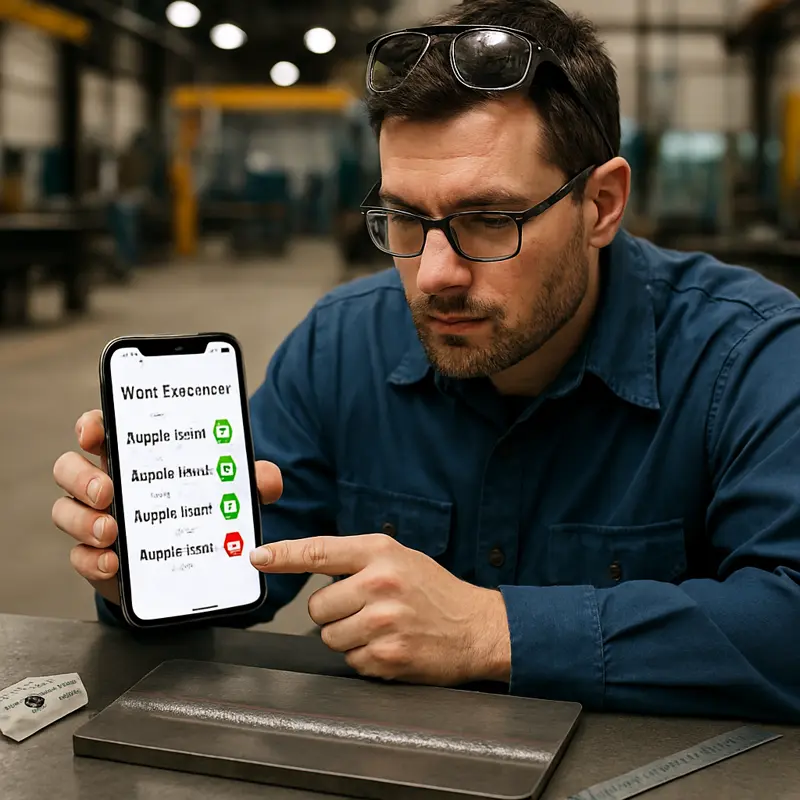

촬영. 보정. 측정. EN ISO 5817 판정.
WeldGauge는 iPhone을 휴대용 용접 검사 스테이션으로 바꿔 줍니다. 알려진 판 두께나 배관 직경을 보정 기준으로 사용하세요 — 별도의 도구가 필요 없습니다. 여유 높이, 언더컷, 틀어짐, 목 두께 등을 측정하고 EN ISO 5817 품질 등급 B, C, D로 즉시 판정합니다.


주요 기능
현장 품질 평가에 필요한 모든 것 — 사진 촬영부터 규격 기반 합격/불합격 판정까지.
📷 카메라와 사진 가져오기
최대 20× 줌으로 용접부를 촬영해 세부를 확인하세요. 사진 보관함의 기존 이미지를 가져올 수 있습니다. 배경 제거 기능이 용접 단면을 분리해 더 깨끗하게 측정할 수 있습니다.
📐 스마트 보정
사진에 이미 있는 알려진 치수로 보정하세요 — 홈 가장자리에 보이는 판 두께, 배관 외경, 또는 자. 앱이 정확한 픽셀-밀리미터 비율을 계산합니다. 추가 장비가 필요 없습니다.
📏 EN ISO 5817 판정
불완전부 유형(502, 504, 507, 508, 5011, 5213, 512)을 선택하고 벽 두께를 입력하면 품질 등급 B, C, D의 합격/불합격이 즉시 표시됩니다. 그림 참조 가이드가 내장되어 있습니다.
📋 프로젝트 관리
용접 번호, 위치, 용접공 ID별로 검사를 프로젝트로 정리하세요. 프로젝트별 여러 측정을 등록할 수 있습니다. 모든 데이터는 기기에만 저장됩니다 — 어떤 데이터도 기기를 떠나지 않습니다.
🛠 배관 이음쇠 라이브러리
표준 배관 이음쇠(엘보, 티, 리듀서, 캡)의 검색 가능한 데이터베이스에 치수와 규격을 수록해 현장에서 빠르게 참조할 수 있습니다.
🔒 완전 오프라인·프라이빗
모든 기능이 인터넷 없이 작동합니다. 데이터 수집 없음, 계정 없음, 분석 없음. 통신이 안 되는 원격지 현장 검사에 적합합니다.
실제 작동 모습
WeldGauge의 핵심 기능을 보여 주는 4가지 실제 검사 작업 흐름.
맞대기 용접 — 판 두께 보정
용접 홈 가장자리에 보이는 알려진 판 두께로 보정한 후 기공 불완전부를 측정합니다.
용접 길이 — 원형 구멍 보정
직경을 아는 구멍을 보정 기준으로 사용해 용접 이음 길이를 정확하게 측정합니다.
T 이음 매크로 — EN 5817 판정
내장된 EN ISO 5817 그림 참조 가이드로 T 이음 매크로 시험편을 측정합니다.
도구 — 배관 이음쇠 라이브러리
검색 가능한 배관 이음쇠 데이터베이스를 둘러보고 현장 검사 중 치수 참조에 활용하세요.
사용 방법
사진부터 합격/불합격 판정까지 4단계 — 데스크톱 소프트웨어가 필요 없습니다.
1. 촬영
내장 카메라로 용접부를 촬영(최대 20× 줌)하거나 기존 사진을 가져옵니다. 보정 기준 — 판 가장자리, 배관 표면, 또는 자 — 가 화면 안에 보이는지 확인하세요.
2. 보정
사진 속 알려진 치수에 선을 그으세요: 홈 가장자리의 판 두께, 배관 외경, 또는 자. 실제 값을 입력하면 앱이 픽셀-밀리미터 비율을 확정합니다.
3. 측정
탭하여 용접 치수를 측정하세요 — 여유 높이, 언더컷 깊이, 다리 길이, 목 두께, 틀어짐량. 측정 중에도 자유롭게 이동, 확대, 회전할 수 있습니다.
4. 판정
불완전부 유형을 선택하고 벽 두께를 입력하세요. 앱이 측정값을 EN ISO 5817 한계값과 비교하여 달성한 품질 등급 — B, C, D 또는 부적합 — 을 표시합니다.
실제 활용 사례
WeldGauge는 용접 검사원이 실제로 일하는 환경을 위해 설계되었습니다.

배관 맞대기 용접 검사
배관 접합부의 원주 용접을 촬영하세요. 알려진 배관 직경이나 벽 두께를 보정에 사용합니다. 여유 높이와 틀어짐을 측정하고 EN ISO 5817로 판정합니다.

필렛 용접 — 판 두께로 보정
자가 없어도 문제없습니다. 단면 가장자리에 보이는 판 두께가 보정 기준이 됩니다. 사진 위에서 바로 목 두께와 다리 길이를 측정할 수 있습니다.

언더컷 및 결함 판정
언더컷 깊이, 용착 금속 과잉 또는 어떤 불완전부든 측정하세요. 앱이 EN ISO 5817의 세 품질 등급 모두에 대해 명확한 합격/불합격 결과로 즉시 판정합니다.

현장 검사 — 복잡한 배관 조립체
티, 엘보, 리듀서, 플랜지 접합의 용접을 검사하세요. 완전 오프라인으로 작동 — 통신이 안 되는 원격 배관 현장에 적합합니다.

문서화 및 보고
검사 기록용으로 측정 결과와 주석 달린 사진을 내보내세요. 프로젝트 데이터는 용접 번호, 위치, 용접공별로 정리되어 QA 문서에 바로 사용할 수 있습니다.
자주 묻는 질문
인터넷 연결이 필요한가요?
아니요. 카메라, 보정, 측정, EN ISO 5817 판정 등 모든 기능이 완전히 오프라인에서 작동합니다. 데이터를 전송하는 일은 전혀 없습니다.
보정 기준으로 무엇을 사용할 수 있나요?
사진에 보이는 알려진 치수라면 무엇이든: 홈 가장자리의 판 두께, 배관 외경, 자, 블록 게이지, 심지어 동전까지. 앱이 참조를 바탕으로 픽셀 거리를 실제 밀리미터로 변환합니다.
어떤 규격을 지원하나요?
WeldGauge는 용접 불완전부를 EN ISO 5817로 평가하며 품질 등급 B(엄격), C(중간), D(완화)를 다룹니다. 7가지 불완전부 유형을 그림 참조 가이드와 함께 지원합니다.
측정 정확도는 어느 정도인가요?
정확도는 보정 기준과 이미지 품질에 따라 달라집니다. 참조 치수가 선명하게 보이고 초점이 잘 맞은 사진이면 밀리미터 미만의 정밀도도 달성할 수 있습니다.
데이터를 수집하나요?
아니요. 데이터 수집 없음 — 분석도 추적도 계정도 없습니다. 모든 사진과 측정값은 기기에 남습니다. 개인정보 처리방침를 확인하세요.
iPad에서 작동하나요?
네. WeldGauge는 iPhone과 iPad 모두에 최적화된 범용 앱입니다.
누구를 위한 앱인가요?
용접 검사원(CWI, CSWIP, IWI), 품질 관리 엔지니어, 제작 현장 감독자, 용접 학생 — 현장에서 빠르고 규격 기반인 용접 판정이 필요한 모든 분을 위한 앱입니다.
지원팀에 연락하려면?
wangning.engineer@outlook.com로 이메일을 보내 주세요. 보통 24~48시간 내에 답변드립니다.
앱 받기
WeldGauge는 iPhone·iPad용으로 App Store에 있습니다.